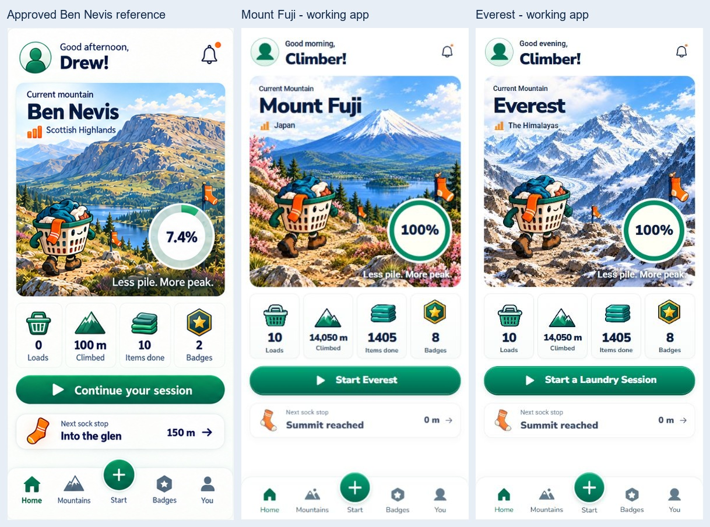
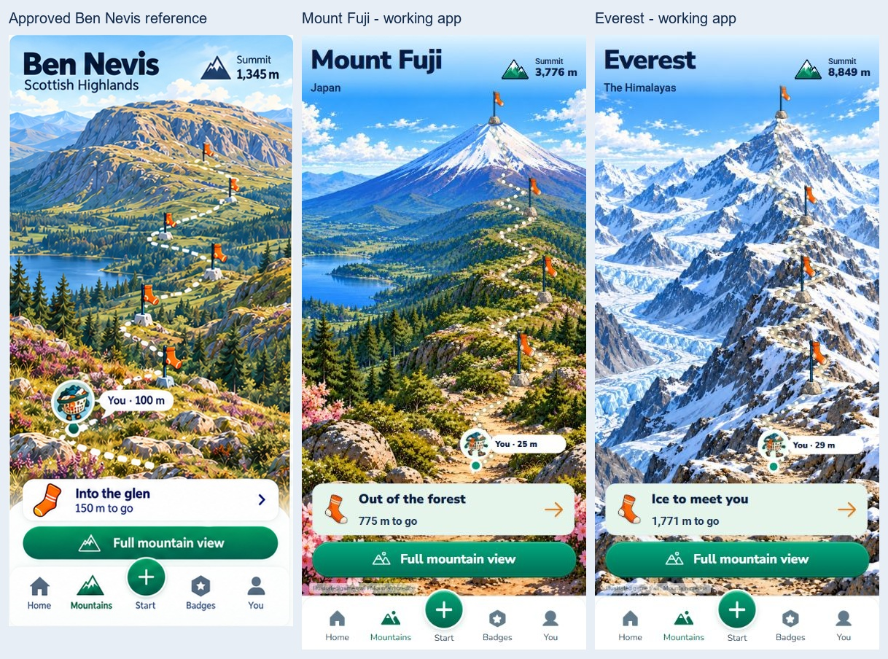
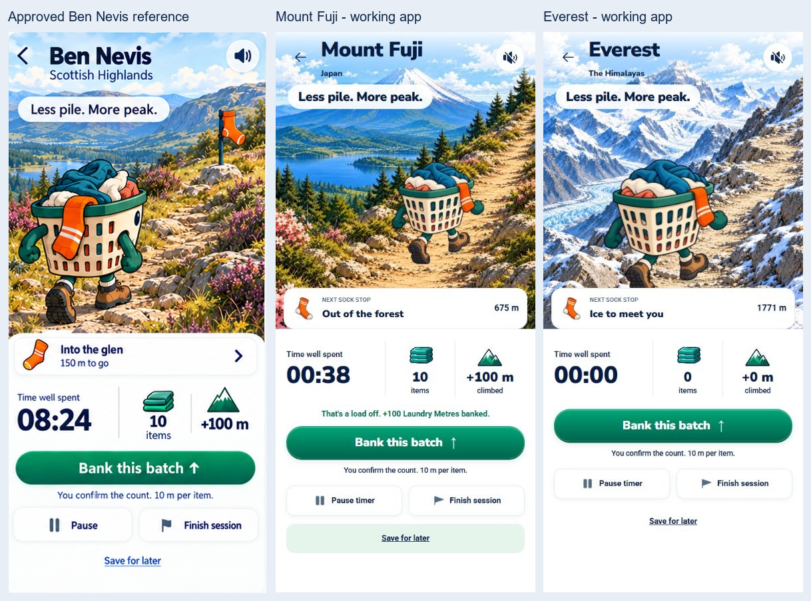
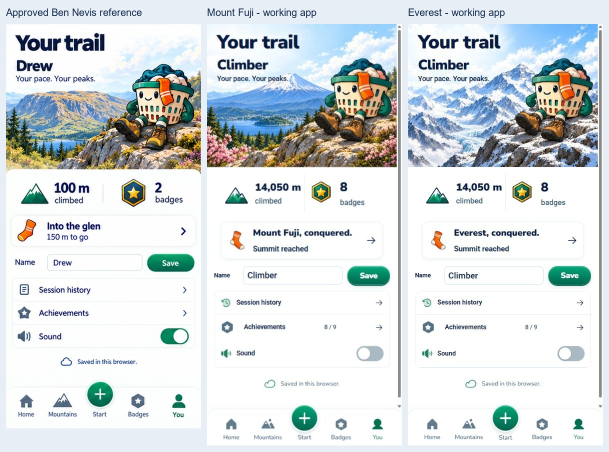
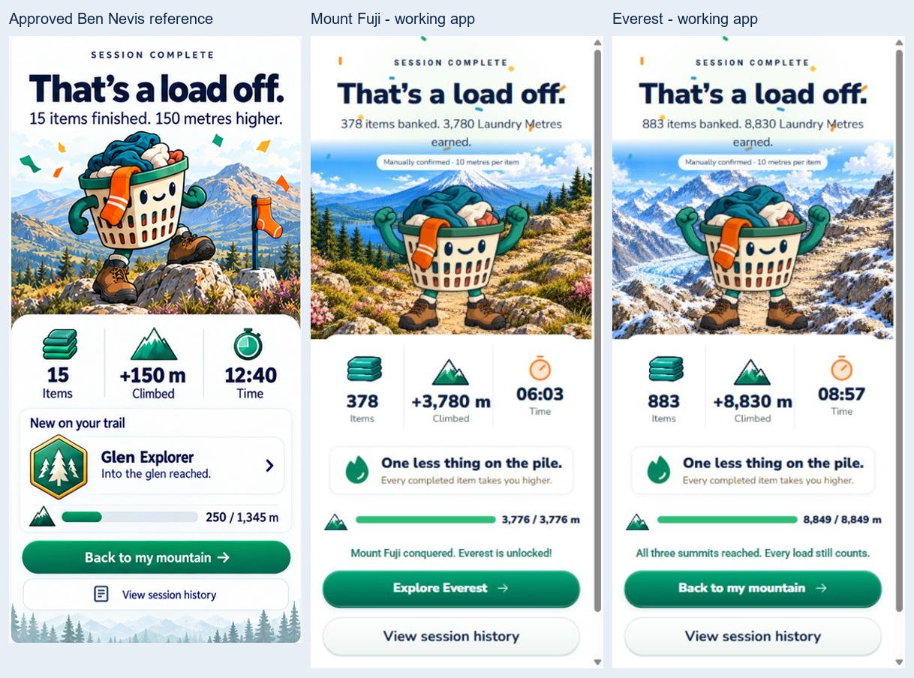
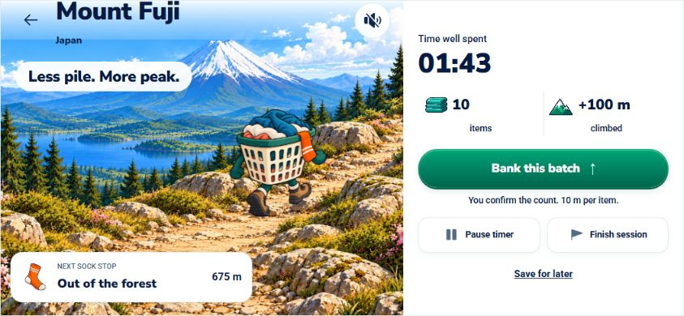

Both expeditions are playable in the approved Ben Nevis visual family. Actual browser captures below show the new scenery, shared controls and saved progression.






Everest landscape · Fuji summit unlock · Everest summit · New badge · Narrow phone check